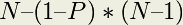

Infectious Disease¶
By Aaron Weeden, Shodor Education Foundation, Inc. [1]
Heavily modified by Yu Zhao, Macalester College
Overview
Epidemiology is the study of infectious disease. Infectious diseases are said to be “contagious” among people if they are transmittable from one person to another. Epidemiologists can use models to assist them in predicting the behavior of infectious diseases. This module will develop a simple agent-based infectious disease model, develop a parallel algorithm based on the model, provide a coded implementation for the algorithm, and explore the scaling of the coded implementation on high performance cluster resources.
Pre-assessment Rubric
This rubric is to gauge students’ initial knowledge and experience with the materials presented in this module. Students are asked to rate their knowledge and experience on the following scale and in the following subject areas:
Scale
- no knowledge, no experience
- very little knowledge, very little experience
- some knowledge, some experience
- a good amount of knowledge, a good amount of experience
- high level of knowledge, high level of experience
Subject areas
- Disease modeling
- Parallel Algorithm Design
- Parallel Hardware
- MPI programming
- OpenMP programming
- Using a cluster
- Scaling parallel code
Model
The model makes certain assumptions about the spread of the disease. In particular, it assumes that the disease spreads from one person to another person with some “contagiousness factor”, that is, some percent chance that the disease will be transmitted. The model further assumes that diseases can only be spread from a person who is carrying the disease, a so-called “infected” person, to a person who is capable of becoming infected, also known as a “susceptible” person. The disease is assumed to have a certain incubation period, or “duration” – a length of time during which the disease remains in the person. The disease is also assumed to be transmittable only within a certain distance, or “infection radius”, from a person capable of transmitting the disease. The model further assumes that each person moves randomly at most 1 unit in a given direction each day. Finally, the model assumes that after the duration of the disease within a person, the person can become either “immune” to the disease, incapable of being further infected or of infecting other people but still able to move around, or “dead”, incapable of being further infected, infecting other people, or moving.
The description below explains the various entities in the model. Things in underlines are entities, things in bold are attributes of the entities, and things in italics refer to entities found elsewhere in the description.
 (pl. people)
(pl. people)
- Has a certain X location and a certain Y location, which tell where it is in the environment.
- Has a certain state, which can be either ‘susceptible’, ‘infected’, ‘immune’, or ‘dead’. States are stored in the memories of processes and threads. They can also be represented by color (black for susceptible, red for infected, green for immune, no color for dead), or by a ASCII character (o for susceptible, X for infected, I for immune, no character for dead).
 Disease
Disease
- Has a certain duration, which is the number of days in which a person remains infected.
- Has a certain contagiousness factor, which is the likelihood of it spreading from one person to another.
- Has a certain deadliness factor, which is the likelihood that a person will die from the disease. 100 minus this is the likelihood that a person will become immune to the disease.
 Environment
Environment
- Has a certain width and height, which bound the area in which people are able to move.
 Timer
Timer
- Counts the number of days that have elapsed in the simulation.
Thread (pl. threads)
- A computational entity that controls people and performs computations.
- Shares memory with other threads, a space into which threads can read and write data.
 Process (pl. processes)
Process (pl. processes)
- A computational entity that controls people and performs computations.
- Has its own private memory, which is a space into which it can read and write data.
- Has a certain rank, which identifies it.
- Communicates with other processes by passing messages, in which it sends certain data.
- Can spawn threads to do work for it.
- Keeps count of how many susceptible, infected, immune, and dead people exist.
Introduction to Parallelism
In parallel processing, rather than having a single program execute tasks in a sequence, the program is split among multiple “execution flows” executing tasks in parallel, i.e. at the same time. The term “execution flow” refers to a discrete computational entity that performs processes autonomously. A common synonym is “execution context”; “flow” is chosen here because it evokes the stream of instructions that each entity processes.
Execution flows have more specific names depending on the flavor of parallelism being utilized. In “distributed memory” parallelism, in which execution flows keep their own private memories (separate from the memories of other execution flows), execution flows are known as “processes”. In order for one process to access the memory of another process, the data must be communicated, commonly by a technique known as “message passing”. The standard of message passing considered in this module is defined by the “Message Passing Interface (MPI)”, which defines a set of primitives for packaging up data and sending them between processes.
In another flavor of parallelism known as “shared memory”, in which execution flows share a memory space among them, the execution flows are known as “threads”. Threads are able to read and write to and from memory without having to send messages. [2] The standard for shared memory considered in this module is OpenMP, which uses a series of “pragma”s, or directives for specifying parallel regions of code to be executed by threads. [3]
A third flavor of parallelism is known as “hybrid”, in which both distributed and shared memory are utilized. In hybrid parallelism, the problem is broken into tasks that each process executes in parallel; the tasks are then broken further into subtasks that each of the threads execute in parallel. After the threads have executed their sub-tasks, the processes use the shared memory to gather the results from the threads, use message passing to gather the results from other processes, and then move on to the next tasks.
Parallel Hardware
In order to use parallelism, the underlying hardware needs to support it. The classic model of the computer, first established by John von Neumann in the 20:math:{}^{th} century, has a single CPU connected to memory. Such an architecture does not support parallelism because there is only one CPU to run a stream of instructions. In order for parallelism to occur, there must be multiple processing units running multiple streams of instructions. “Multi-core” technology allows for parallelism by splitting the CPU into multiple compute units called cores. Parallelism can also exist between multiple “compute nodes”, which are computers connected by a network. These computers may themselves have multi-core CPUs, which allows for hybrid parallelism: shared memory between the cores and message passing between the compute nodes.
Motivation for Parallelism
We now know what parallelism is, but why should we use it? The three motivations we will discuss here are speedup, accuracy, and scaling. These are all compelling advantages for using parallelism, but some also exhibit certain limitations that we will also discuss.
“Speedup” is the idea that a program will run faster if it is parallelized as opposed to executed serially. The advantage of speedup is that it allows a problem to be modeled [4] faster. If multiple execution flows are able to work at the same time, the work will be finished in less time than it would take a single execution flow.
“Accuracy” is the idea of forming a better solution to a problem. If more processes are assigned to a task, they can spend more time doing error checks or other forms of diagnostics to ensure that the final result is a better approximation of the problem that is being modeled. In order to make a program more accurate, speedup may need to be sacrificed.
“Scaling” is perhaps the most promising of the three. Scaling says that more parallel processors can be used to model a bigger problem in the same amount of time it would take fewer parallel processors to model a smaller problem. A common analogy to this is that one person in one boat in one hour can catch a lot fewer fish than ten people in ten boats in one hour.
There are issues that limit the advantages of parallelism; we will address two in particular. The first, communication overhead, refers to the time that is lost waiting for communications to take place before and after calculations. During this time, valuable data is being communicated, but no progress is being made on executing the algorithm. The communication overhead of a program can quickly overwhelm the total time spent modeling the problem, sometimes even to the point of making the program less efficient than its serial counterpart. Communication overhead can thus mitigate the advantages of parallelism.
A second issue is described in an observation put forth by Gene Amdahl and is commonly referred to as “Amdahl’s Law”. Amdahl’s Law says that the speedup of a parallel program will be limited by its serial regions, or the parts of the algorithm that cannot be executed in parallel. Amdahl’s Law posits that as the number of processors devoted to the problem increases, the advantages of parallelism diminish as the serial regions become the only part of the code that take significant time to execute. In other words, a parallel program can only execute as fast as its serial regions. Amdahl’s Law is represented as an equation in Figure 2.
Speedup = 
where
- P = the proportion of the program that can be made parallel
- 1 – P = the proportion of the program that cannot be made parallel
- N = the number of processors
Figure 2: Amdahl’s Law
Amdahl’s Law provides a strong and fundamental argument against utilizing parallel processing to achieve speedup. However, it does not provide a strong argument against using it to achieve accuracy or scaling. The latter of these is particularly promising, as it allows for bigger classes of problems to be modeled as more processors become available to the program. The advantages of parallelism for scaling are summarized by John Gustafson in Gustafson’s Law, which says that bigger problems can be modeled in the same amount of time as smaller problems if the processor count is increased. Gustafson’s Law is represented as an equation in Figure 3.
Speedup(N) = 
where
- N = the number of processors
- 1–P = the proportion of the program that cannot be made parallel
Figure 3: Gustafson’s Law
Amdahl’s Law reveals the limitations of what is known as “strong scaling”, in which the number of processes remains constant as the problem size increases. Gustafson’s Law reveals the promise of “weak scaling”, in which the number of processes increases along with the problem size. These concepts will be explored further in Exercise 4.
Code
The code in this module is written in the C programming language, chosen for its ubiquity in scientific computing as well as its well-defined use of MPI and OpenMP.
The code is attached to this module in pandemic.zip. After unpacking this using an archive utility, use of the code will require the use of a command line terminal. C is a compiled language, so it must be run through a compiler first to check for any syntax errors in the code. To compile the code in all its forms of parallelism, enter “make all” in the terminal. For other compilation options, see the Makefile. To run the program, enter “./pandemic.serial” to run the serial (non-parallel) version, “./pandemic.openmp” to run the OpenMP version, “mpirun –np <number of processes> pandemic.mpi” to run the MPI version, or “mpirun –np <number of processes> pandemic.hybrid” to run the hybrid OpenMP/MPI version. Each version of the code can be run with different options by appending arguments to the end of commands, as in “./pandemic.serial –n 100”. These options are described below:
- -n <the number of people in the model>
- -i <the number of initially infected people>
- –w <the width of the environment>
- –h <the height of the environment>
- –t <the number of time days in the model>
- –T <the duration of the disease (in days)>
- –c <the contagiousness factor of the disease>
- –d <the infection radius of the disease>
- –D <the deadliness factor of the disease>
- –m <the number of actual microseconds in between days of the model> – this is used to slow or speed up the animation of the model
To help better understand the code, students can consult the data structures section below.
| [1] | For original documentation and code developed by Aaron Weeden, please go to original pandemic. |
| [2] | It should be noted that shared memory is really just a form of fast message passing. Threads must communicate, just as processes must, but threads get to communicate at bus speeds (using the front-side bus that connects the CPU to memory), whereas processes must communicate at network speeds (Ethernet, infiniband, etc.), which are much slower. |
| [3] | Threads can also have their own private memories, and OpenMP has pragmas to define whether variables are public or private. |
| [4] | Note that we refer to “modeling” a problem, not “solving” a problem. This follows the computational science credo that algorithms running on computers are just one tool used to develop approximate solutions (models) to a problem. Finding an actual solution may involve the use of many other models and tools.` |

Previous topic
Welcome to Pandemic Exemplar (for those with some experience)’s documentation!